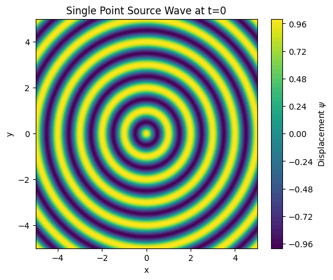
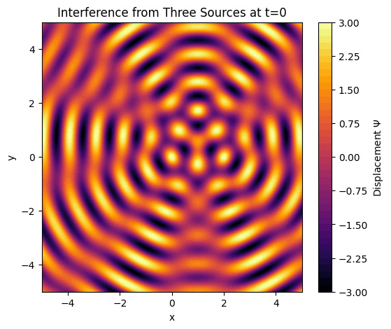
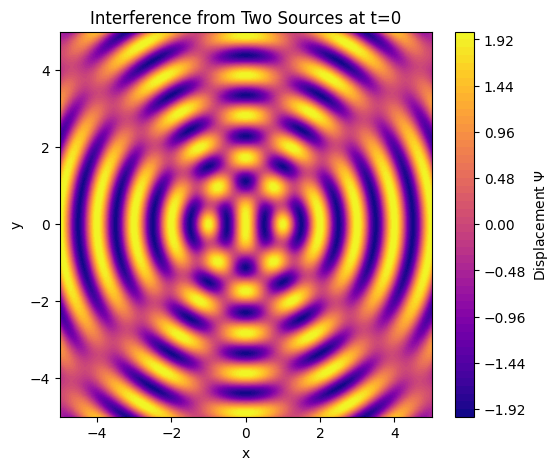
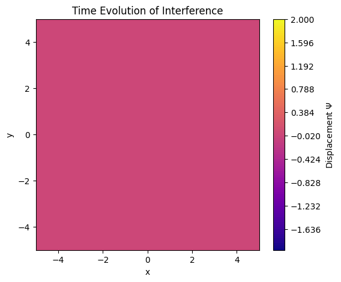
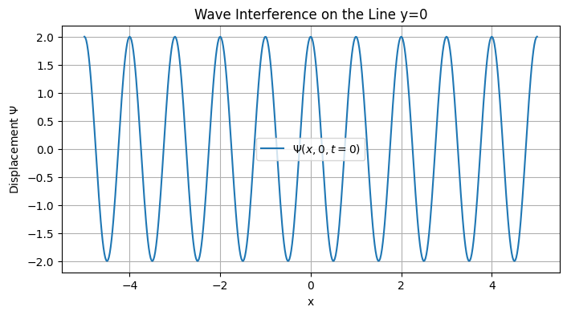

🌊 Problem 1: Interference Patterns on a Water Surface
📘 Motivation
Interference occurs when waves from different sources overlap, creating new patterns. On a water surface, this can be clearly observed when ripples from multiple point sources meet. These patterns illustrate:
- Constructive interference: where waves reinforce each other
- Destructive interference: where waves cancel out
This task helps us understand wave behavior visually and builds intuition for concepts such as phase, coherence, and superposition.
🎯 Task Overview
You will simulate and analyze interference patterns created by waves emitted from point sources located at the vertices of a regular polygon.
🧮 Wave Equation
The wave from a single source at location \(\vec{r}_i\) is given by:
$$ \psi_i(\vec{r}, t) = A \cdot \cos\left(k |\vec{r} - \vec{r}_i| - \omega t + \phi\right) $$  Where:
- \(\psi_i\): displacement at point \(\vec{r}\) and time \(t\)
- \(A\): amplitude
- \(k = \frac{2\pi}{\lambda}\): wave number
- \(\omega = 2\pi f\): angular frequency
- \(|\vec{r} - \vec{r}_i|\): distance from source to point
- \(\phi\): initial phase
🧭 Steps to Follow
1. Choose a Regular Polygon
- Triangle, square, pentagon, etc.
2. Position Wave Sources
- Place point sources at the vertices of the polygon.

3. Define Wave Equations
- Use the wave formula for each source based on its position.
4. Apply Superposition Principle
$$ \Psi(\vec{r}, t) = \sum_{i=1}^{N} \psi_i(\vec{r}, t) $$ 
5. Visualize Interference Pattern
- Plot surface displacement across a 2D grid.

6. Analyze Constructive & Destructive Interference
- Observe and explain bright (amplified) and dark (cancelled) regions.

💡 Assumptions
- All waves are coherent (same frequency, amplitude, phase relationship).
- Waves propagate on a flat 2D plane.
- Medium is uniform and lossless.
📦 Deliverables
- ✅ Python notebook (e.g., in Google Colab) with simulation code
- ✅ Graphical representations of the interference pattern
- ✅ Explanation of the physical phenomena observed
- ✅ Discussion of phase, geometry, and interference effects
📌 Notes
- Increasing the number of sources (polygon vertices) leads to more complex interference.
- You can later test with varying phase offsets or frequencies for deeper analysis.